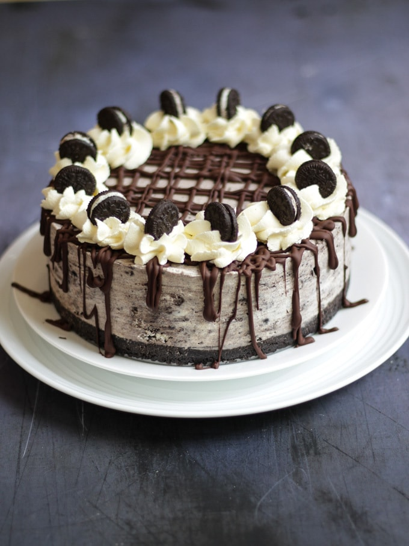

My Recipe for Oreo Cheesecake
This is my recipe for no bake Oreo Cheesecake!
It's really easy and quick to make! It takes around 1/2 an hour to make
Serves 10-12 people

Ingredients:
- 75g of unsalted butter
- 250g of Oreo cookies
- 400g of cream cheese
- 200g of icing sugar
- 300g of mascarpone
- 1 tsp vanilla extract
Total cost of ingredients: € 10.50
Instructions:
- Place the digestive biscuits into a sealable freezer bag. Push all the air out and seal the bag.
Crush the biscuits with a rolling pin, being careful not to break any holes in the bag.
- Melt the butter in a large saucepan. Tip the biscuit crumbs into the butter and mix well
until thoroughly combined. Press the buttery crumbs into the bottom of a 23cm/9in
springform or loose-bottomed tin. Chill in the refrigerator while you make the topping.
- Combine the cream cheese and mascarpone in a large mixing bowl. Using an electric handheld mixer,
blend the cheeses together until light and fluffy.Add the icing sugar a little at a time and blend to
incorporate. Finally, mix in the vanilla.The mixture should be very light and fluffy
- Place the malted milk balls in the sealable freezer bag and close.Knock the malted milk balls with a
rolling pin to just break them apart. Fold half of the crushed malted milk balls
into the cream cheese mixture until thoroughly combined.
- Spread the cream cheese mixture over the biscuit base and smooth the top
with a palette knife or spatula. Cover with cling film and chill in the fridge for at least four hours.
- When ready to serve,release the catch of the springform tin carefully, then slice and serve